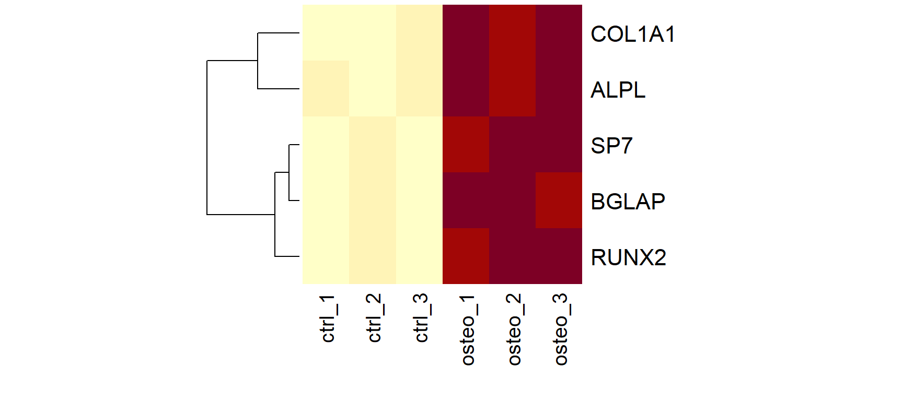

[1] "character"[1] "logical"Introdução à Bioinformática | UNESP 2026
2026-10-04
Criada em 1996 por Ross Ihaka e Robert Gentleman na Universidade de Auckland;
Originalmente focada em análises estatísticas;
Open source;
Atualmente na versão 4.6.1;
The Comprehensive R Archive Network;
Para baixar e instalar no seu computador: https://cran.r-project.org/
Você baixar pacotes e submeter novos pacotes;
Repositório de pacotes para bioinformática em R;
No R, tudo que existe é um objeto e tudo que acontece é uma função;
Guardamos valores em objetos com o operador de atribuição <-;
[1] "character"[1] "logical"| Um único tipo | Tipos diferentes | |
|---|---|---|
| 1 dimensão | vetor | lista |
| 2 dimensões | matriz | data frame |
Quase toda análise em bioinformática é feita com essas quatro estruturas;
Um FASTA, um BED, um VCF, uma matriz de contagens: ao entrar no R, todos viram uma delas;
Sequência ordenada de elementos do mesmo tipo;
É a estrutura mais básica do R: um valor sozinho já é um vetor de tamanho 1;
Criados com a função c(), de combinar;
[1] "RUNX2" "SP7" "ALPL" "COL1A1" "BGLAP" [1] 250 80 1320 15400 45[1] "character"[1] "numeric"[1] "logical"character: nomes de genes, sequências, identificadores de amostras;
numeric: contagens, expressão, posições no genoma, valores de p;
logical: respostas de sim ou não (o gene é significativo? a amostra passou no controle de qualidade?);
[1] "1" "6" "12" "17" "X" [1] "character"Se os tipos forem misturados, o R converte tudo para o mais flexível: logical → numeric → character;
É por isso que a coluna de cromossomos de um arquivo quase sempre é lida como texto (X, Y, MT);
Não dá para fazer contas com texto: "6" + 1 é um erro;
[1] 7.971544 6.339850 10.367415 13.910736 5.523562[1] 1.4624159 0.4679731 7.7215560 90.0848201 0.2632349[1] TRUE FALSE TRUE TRUE FALSE[1] 5[1] 17095[1] 3419[1] 250[1] 45 15400[1] 15400 1320 250 80 45[ ]. No R, a contagem começa em 1;[1] "RUNX2"[1] "RUNX2" "ALPL" [1] "SP7" "ALPL" "COL1A1" "BGLAP" [1] "RUNX2" "ALPL" "COL1A1" RUNX2 SP7 ALPL COL1A1 BGLAP
250 80 1320 15400 45 COL1A1
15400 RUNX2 SP7
250 80 [1] TRUE FALSE TRUE ALPL COL1A1
3 4 bases
A C G T
1 3 3 3 [1] 0.6[1] 1 2 3 4 5 6[1] 0 7 14 21[1] "controle" "controle" "controle" "osteogenico" "osteogenico"
[6] "osteogenico"NA representa um dado ausente, e qualquer conta com NA devolve NA;[1] NA[1] 24.3[1] FALSE FALSE TRUE FALSE[1] controle controle controle osteogenico osteogenico osteogenico
Levels: controle osteogenicocondicao
controle osteogenico
3 3 Um vetor com duas dimensões: linhas e colunas;
Todos os elementos são do mesmo tipo;
O exemplo clássico: a matriz de contagens (genes × amostras);
ctrl_1 ctrl_2 ctrl_3 osteo_1 osteo_2 osteo_3
RUNX2 250 310 280 890 1020 950
SP7 80 95 70 400 460 510
ALPL 1320 1100 1250 5200 4800 5600
COL1A1 15400 14900 16100 31000 29500 33000
BGLAP 45 60 38 720 810 690[1] 5 6[1] "RUNX2" "SP7" "ALPL" "COL1A1" "BGLAP" [1] "ctrl_1" "ctrl_2" "ctrl_3" "osteo_1" "osteo_2" "osteo_3"[linha, coluna]. Deixar um deles vazio significa “todos”; ctrl_1 ctrl_2 ctrl_3 osteo_1 osteo_2 osteo_3
250 310 280 890 1020 950 RUNX2 SP7 ALPL COL1A1 BGLAP
890 400 5200 31000 720 osteo_1 osteo_2 osteo_3
SP7 400 460 510
BGLAP 720 810 690 ctrl_1 ctrl_2 ctrl_3 osteo_1 osteo_2 osteo_3
17095 16465 17738 38210 36590 40750 RUNX2 SP7 ALPL COL1A1 BGLAP
616.6667 269.1667 3211.6667 23316.6667 393.8333 ctrl_1 ctrl_2 ctrl_3 osteo_1 osteo_2 osteo_3
RUNX2 8.0 8.3 8.1 9.8 10.0 9.9
SP7 6.3 6.6 6.1 8.6 8.8 9.0
ALPL 10.4 10.1 10.3 12.3 12.2 12.5
COL1A1 13.9 13.9 14.0 14.9 14.8 15.0
BGLAP 5.5 5.9 5.3 9.5 9.7 9.4
Uma tabela: cada coluna é um vetor, e cada coluna pode ter um tipo diferente;
Todas as colunas têm o mesmo comprimento;
Linhas são observações (amostras, genes, variantes) e colunas são variáveis;
Em bioinformática: tabela de amostras, anotação de genes, arquivos BED, VCF e GTF, resultados de expressão diferencial;
amostra condicao dia rin
1 ctrl_1 controle 0 9.1
2 ctrl_2 controle 0 8.7
3 ctrl_3 controle 0 9.3
4 osteo_1 osteogenico 14 9.4
5 osteo_2 osteogenico 14 7.2
6 osteo_3 osteogenico 14 8.9'data.frame': 6 obs. of 4 variables:
$ amostra : chr "ctrl_1" "ctrl_2" "ctrl_3" "osteo_1" ...
$ condicao: chr "controle" "controle" "controle" "osteogenico" ...
$ dia : num 0 0 0 14 14 14
$ rin : num 9.1 8.7 9.3 9.4 7.2 8.9[1] 6 4[1] "amostra" "condicao" "dia" "rin" [1] 9.1 8.7 9.3 9.4 7.2 8.9 amostra condicao dia rin
2 ctrl_2 controle 0 8.7 amostra rin
1 ctrl_1 9.1
2 ctrl_2 8.7
3 ctrl_3 9.3
4 osteo_1 9.4
6 osteo_3 8.9 amostra condicao dia rin aprovada biblioteca
1 ctrl_1 controle 0 9.1 TRUE 17095
2 ctrl_2 controle 0 8.7 TRUE 16465
3 ctrl_3 controle 0 9.3 TRUE 17738
4 osteo_1 osteogenico 14 9.4 TRUE 38210
5 osteo_2 osteogenico 14 7.2 FALSE 36590
6 osteo_3 osteogenico 14 8.9 TRUE 40750head(), str() e summary() são as primeiras funções a rodar depois de ler qualquer arquivo;Um vetor “genérico”: cada elemento pode ser qualquer coisa, de qualquer tamanho;
Em bioinformática: conjuntos de genes (vias), resultados de testes estatísticos, objetos do Bioconductor;
List of 3
$ osteogenese : chr [1:4] "RUNX2" "SP7" "ALPL" "BGLAP"
$ matriz_extracelular: chr [1:5] "COL1A1" "COL1A2" "SPARC" "FN1" ...
$ glicolise : chr [1:3] "HK2" "PKM" "LDHA"[1] "osteogenese" "matriz_extracelular" "glicolise" [1] "HK2" "PKM" "LDHA"[1] "RUNX2" "SP7" "ALPL" "BGLAP"$osteogenese
[1] "RUNX2" "SP7" "ALPL" "BGLAP"[[ ]] e $ devolvem o conteúdo; [ ] devolve outra lista;sapply() aplica uma função a cada elemento da lista; osteogenese matriz_extracelular glicolise
4 5 3 osteogenese matriz_extracelular glicolise
4 1 0 [1] "statistic" "parameter" "p.value" "conf.int" "estimate"
[6] "null.value" "stderr" "alternative" "method" "data.name" [1] 0.0002280843List of 4
$ projeto : chr "MSC_osteo_2026"
$ contagens: num [1:5, 1:6] 250 80 1320 15400 45 310 95 1100 14900 60 ...
..- attr(*, "dimnames")=List of 2
$ amostras :'data.frame': 6 obs. of 6 variables:
$ vias :List of 3SummarizedExperiment: contagens, amostras e anotação em um objeto só;| Estrutura | Dimensões | Tipos | Exemplo em bioinformática |
|---|---|---|---|
| Vetor | 1 | um só | expressão de um gene |
| Matriz | 2 | um só | contagens (genes × amostras) |
| Data frame | 2 | um por coluna | tabela de amostras, BED, VCF |
| Lista | 1 | qualquer | vias, resultado de um teste |
marcel.ferreira@unesp.br